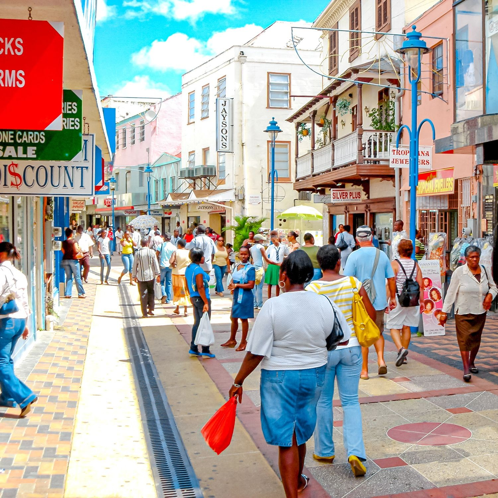
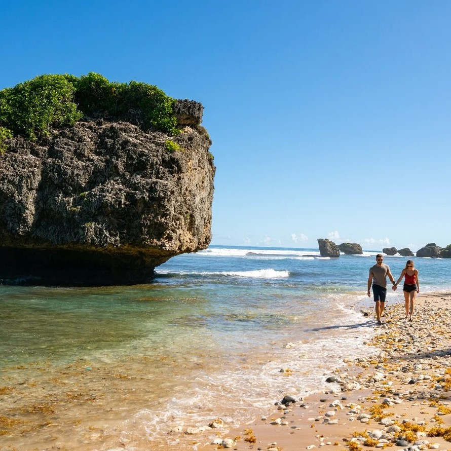

Barbados
Sun, Surf, and Spice: A Sojourn through Enchanting Barbados
Barbados, with its rich history and breathtaking landscapes, had always intrigued me. Landing in Bridgetown, the capital, I was immediately drawn to its colonial charm and bustling streets. My journey started with a visit to the historic Garrison Savannah, where I witnessed lively horse races—a cherished Bajan tradition.
 Heading to the rugged east coast, I found myself in Bathsheba, a haven for surf enthusiasts. The crashing waves and dramatic rock formations created a mesmerizing backdrop. I couldn't resist trying my hand at surfing, and the locals were gracious instructors. Afterward, I explored the nearby Andromeda Botanic Gardens, a serene oasis showcasing Barbados' diverse flora.
No visit to Barbados is complete without savoring its culinary delights, and Oistins Fish Fry was the perfect place to do just that. The lively atmosphere, filled with music and dancing, provided the backdrop for a seafood feast. Bajan classics like flying fish and cou-cou, as well as fresh mahi-mahi, satisfied my taste buds like never before.
Delving into Barbados' history, I made my way to St. Nicholas Abbey, a beautifully preserved plantation house. The Jacobean architecture and lush gardens offered a serene escape. Inside, I learned about the island's sugar cane heritage and sampled their signature rum—a true taste of Barbados.
 Venturing inland, I discovered Hunte's Garden, a hidden gem nestled in a sinkhole. The vibrant flora, meandering pathways, and enchanting atmosphere made it a serene retreat. I spent hours wandering through this botanical wonderland, captivated by its beauty.
A visit to Barbados wouldn't be complete without exploring its underwater treasures. Carlisle Bay, with its crystal-clear waters, was the perfect spot for snorkeling and diving. I encountered vibrant coral reefs teeming with marine life, including colorful fish and majestic sea turtles.
My final stop led me to the charming town of Holetown, where I experienced a breathtaking Barbadian sunset. The town's rich history was evident as I explored its colonial-era architecture and visited the Holetown Monument, commemorating the island's first settlement by the British in 1627.
As I bid farewell to Barbados, I carried with me memories of its warm hospitality, natural wonders, and rich culture. The island's spirit had left an indelible mark on my heart, and I couldn't wait to share this Caribbean gem with my readers.
I hope this journey through Barbados has transported you to a world of sun-kissed beaches, delectable cuisine, and vibrant heritage. Stay tuned for more exciting adventures as I continue to explore the captivating Americas. Until then, may your travels be filled with the enchantment and allure of Barbados!